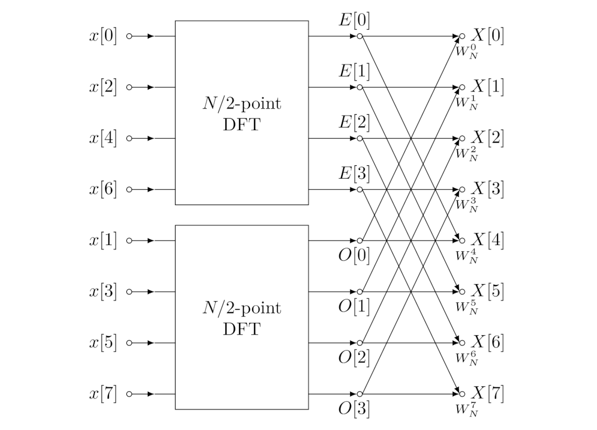
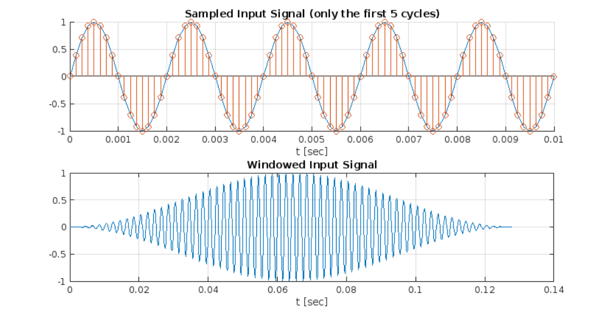
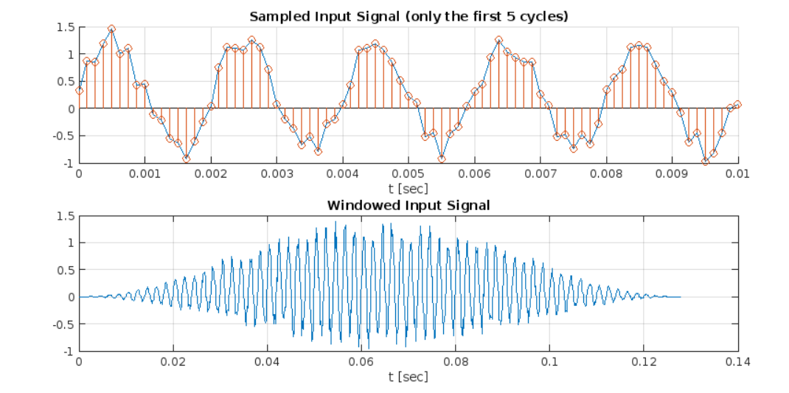
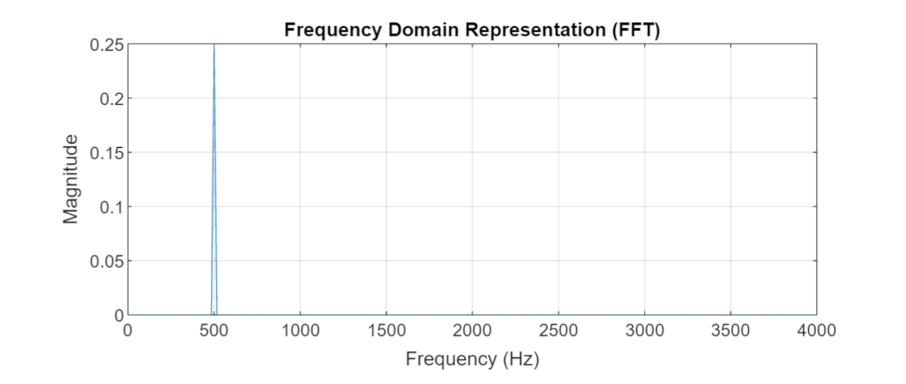
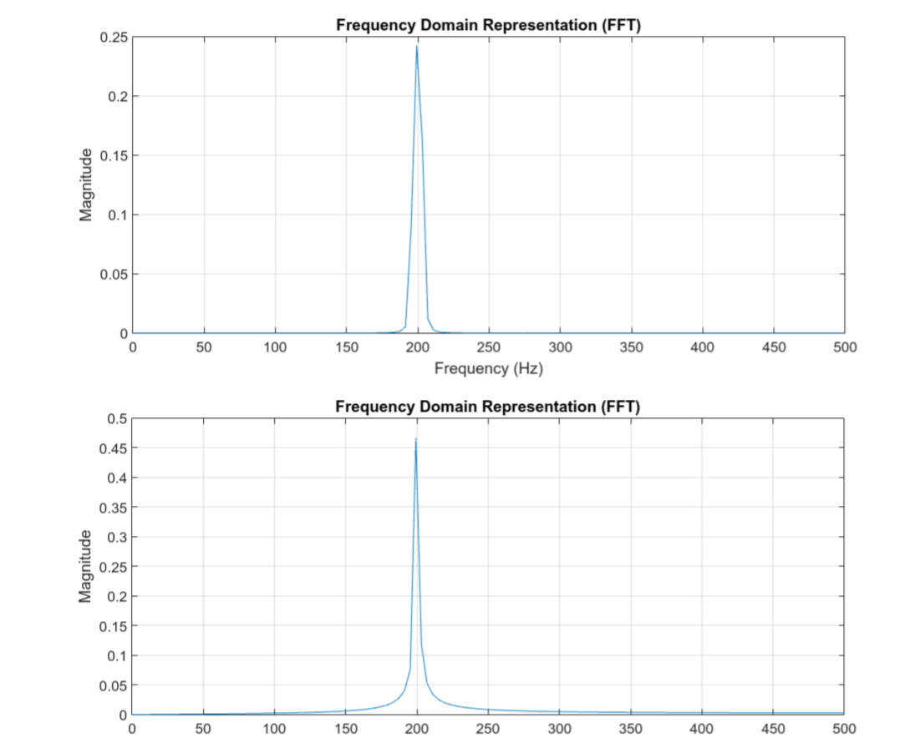
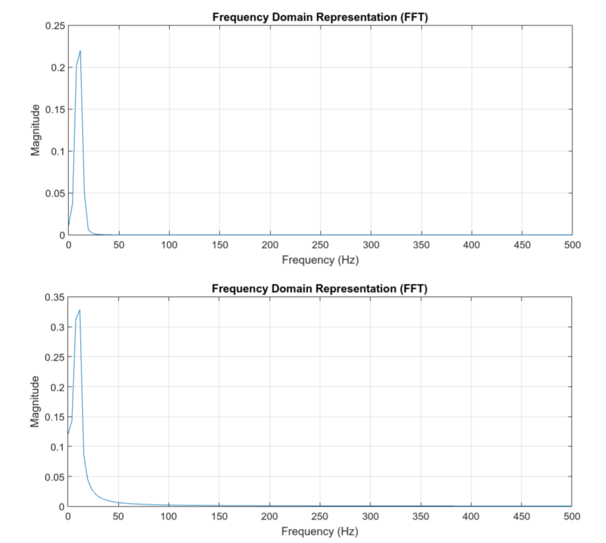
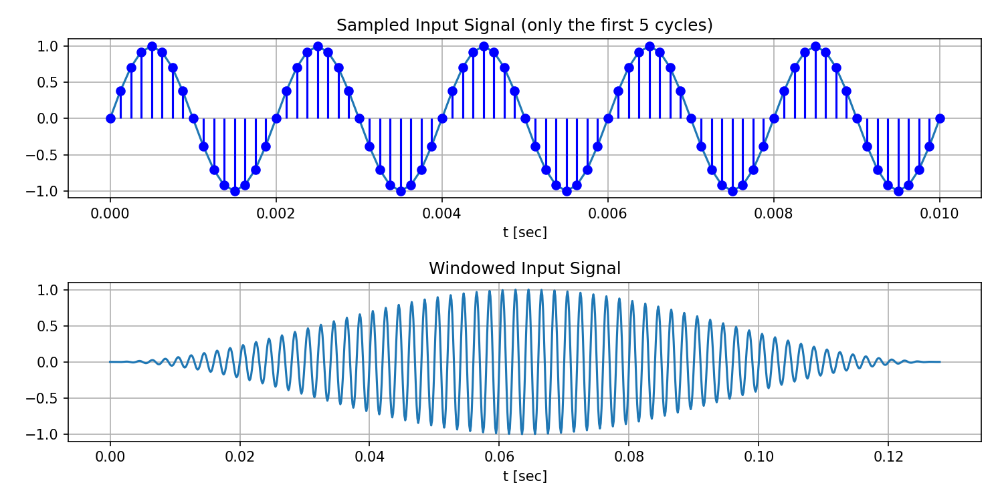
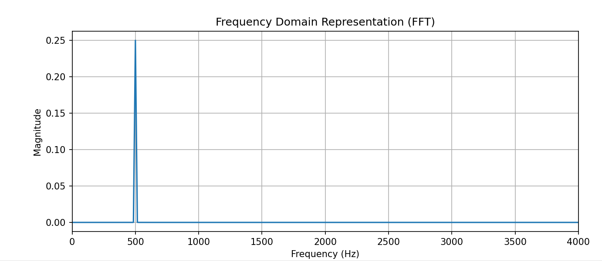

ตัวอย่างการเขียนโค้ด MATLAB และ Python สำหรับการคำนวณ FFT (Fast-Fourier Transform)#
บทความนี้กล่าวถึง ตัวอย่างการเขียนโค้ดในภาษา MATLAB และ Python เพื่อแปลงสัญญาณดิจิทัลด้วยวิธี FFT และใช้ในการวิเคราะห์สัญญาณในเชิงความถี่
Keywords: FFT, MATLAB, Python, Fourier Analysis, Frequency Spectrum
▷ FFT (Fast-Fourier Transform)#
FFT เป็น "อัลกอริทึม" (Algorithm) หรือขั้นตอนวิธีทางคอมพิวเตอร์ เพื่อประมวลผลลำดับข้อมูลของสัญญาณอินพุต และนำผลลัพธ์ที่ได้ไปวิเคราะห์คุณสมบัติเชิงความถี่ (Frequency Spectrum) ของสัญญาณดังกล่าว
อัลกอริทึม FFT ใช้ในการคำนวณค่าสัมประสิทธิ์ของ Discrete Fourier Transform (DFT) สำหรับลำดับข้อมูลที่มีความยาวจำกัด ค่าสัมประสิทธิ์ของ DFT จะถูกใช้เป็นค่าประมาณของค่าสัมประสิทธิ์ของ "อนุกรมฟูเรียร์" (Fourier Series) สำหรับสัญญาณต่อเนื่องเชิงเวลาและเป็นสัญญาณคาบ (Periodic Continuous-Time Signal)

รูป: โครงสร้างสำหรับการคำนวณ N-point FFT มีจำนวนข้อมูลเท่ากับ (Source: Wikipedia)
จากรูปจะเห็นได้ว่า ไดอะแกรมนี้แสดงโครงสร้างการประมวลผลข้อมูลตามวิธีของ FFT ที่มีลักษณะแบบ Recursive กล่าวคือ ในการคำนวณ N-point DFT จากอินพุต (จำนวนจริง) ไปเป็นเอาต์พุต (จำนวนเชิงซ้อน) จะต้องมีการคำนวณ N/2-point DFT เป็นองค์ประกอบย่อยภายใน แต่ในบทความนี้ จะไม่ขอกล่าวถึง วิธีการคำนวณของ FFT ในรายละเอียด
▷ สัญญาณต่อเนื่องเชิงเวลาและการสุ่มสัญญาณ#
สัญญาณอินพุต เป็นสัญญาณต่อเนื่องเชิงเวลา (Continuous-Time Signal) เป็นตัวอย่างของสัญญาณแบบแอนะล็อกในทางกายภาพ และถ้าจะนำมาประมวลผลด้วยคอมพิวเตอร์ จึงต้องมีการแปลงสัญญาณให้เป็นลำดับข้อมูล (Sampled Input Signal) ในส่วนนี้เรียกว่า ADC (Analog-to-Digital Conversion) ซึ่งมีขั้นตอนการชักตัวอย่าง หรือสุ่มตัวอย่างด้วยอัตราคงที่ (Sampling)
ข้อมูลที่ได้จะเรียกว่า ลำดับข้อมูลที่ไม่ต่อเนื่องเชิงเวลา (Discrete-Time Sequence) จำนวนข้อมูล (Number of Samples) จะขึ้นอยู่กับช่วงเวลาที่ต้องการ (Timer Interval) และความถี่หรืออัตราการชักตัวอย่าง ที่ได้เลือกใช้
ความถี่ จะต้องมีค่าอย่างน้อยสองเท่าของความถี่สูงสุดของสัญญาณอินพุต (ตามทฤษฎีของ Nyquist Sampling Theorem) เพื่อไม่ให้เกิดปัญหาที่เรียกว่า Aliasing หรือ ความผิดเพี้ยนของสัญญาณข้อมูลจากการชักตัวอย่าง ดังนั้นสัญญาณอินพุตมีความถี่สูงสุดไม่เกิน จะเป็นไปตามเงื่อนไขดังกล่าว
ถ้ากำหนดให้สัญญาณอินพุตเป็นสัญญาณต่อเนื่องเชิงเวลารูปคลื่นไซน์
และมีการนำมาแปลงเป็นลำดับข้อมูลที่ไม่ต่อเนื่องเชิงเวลา จะได้ลำดับข้อมูลเป็น โดยที่ เป็นเลขจำนวนเต็ม
▷ ตัวอย่างการเขียนโค้ด MATLAB#
ถัดไปเป็นตัวอย่างการเขียนโค้ดด้วย MATLAB
โดยกำหนดให้สัญญาณอินพุตเป็นรูปคลื่นไซน์ (Sinusoidal Waveform)
และมีความถี่ freq เช่น 500 Hz สัญญาณอินพุตอาจมีการเพิ่มสัญญาณรบกวน
หรือ Noise โดยกำหนดค่าสเกล noise_scale อยู่ระหว่าง 0.0 แต่น้อยกว่า 1.0
เมื่อได้กำหนดรูปแบบของสัญญาณแล้ว จึงมีการชักตัวอย่างสัญญาณด้วยอัตราคงที่
Fs เช่น 8000 Hz และมีจำนวนข้อมูล N_samples เท่ากับ 1024
ลำดับของข้อมูลที่ได้จะถูกเก็บในอาร์เรย์ x_input[]
ก่อนที่จะประมวลผลข้อมูลอินพุตด้วย FFT อาจมีการใช้ฟังก์ชันหน้าต่าง (Windowing Function) ซึ่งมีรูปแบบให้เลือกใช้ได้หลายฟังก์ชัน เช่น Hann Window และ Hamming Window เป็นต้น
เมื่อสร้างอาร์เรย์สำหรับ Windowing Function ที่มีความยาวเท่ากับจำนวนข้อมูลอินพุต
แล้วนำมาคูณกัน ผลลัพธ์ที่ได้ (เก็บข้อมูลไว้ในอาร์เรย์ x_input_windowed[])
จึงนำไปใช้เป็นอินพุตให้ฟังก์ชัน fft() ของ MATLAB
แล้วนำผลลัพธ์ที่ได้มาแปลงให้เป็นขนาดด้วยฟังก์ชัน abs() ซึ่งข้อมูลแต่ละตัวจะได้ค่าเป็นเลขจำนวนจริง
แล้วแสดงรูปกราฟ Magnitude Plot ที่มีแกนแนวนอนเป็นความถี่ ในช่วง ถึง
% clear variables, clear the command window, clear figures
clearvars; clc; clf; close all;
% Step 1)
% Define some parameters
freq = 500; % The fundamental frequency of the sine wave (in Hz)
Fs = 8000; % The sampling rate (in Hz)
N_samples = 1024; % Number of samples
% Define an array of time steps
ts = 0:1/Fs:(N_samples-1)/Fs;
% Step 2)
% Generate the input waveform as summation ofsine-wave signals
% of different harmonic frequencies.
omega = 2*pi*freq;
x_input = sin( omega * ts );
% add some noise
noise_scale = 0.5;
x_input = x_input + noise_scale*rand(1,N_samples);
% Step 3)
% Define a windowing function
% window = ones(N_samples,1); % rectangular window
% window = hamming(N_samples); % Hamming window
window = hann(N_samples); % Hann window
% Step 4)
% Apply the windowing function to the input signal.
x_input_windowed = x_input .* window';
% Step 5)
% Plot the sampled data.
figure;
xlabel('Time (s)');
ylabel('Amplitude');
subplot(2, 1, 1);
hold on;
% Plot only the first N cycles of the input signal.
N_cycles = 5;
n_range = (1:ceil(N_cycles*Fs/freq)+1);
plot( ts(n_range), x_input(n_range) );
stem( ts(n_range), x_input(n_range) );
title( ['Sampled Input Signal (only the first ', ...
num2str(N_cycles), ' cycles)'] ),
xlabel('t [sec]'), grid on; hold off;
% Plot all the values of the windowed input signal.
subplot(2, 1, 2);
plot( ts, x_input_windowed );
title('Windowed Input Signal'), xlabel('t [sec]'), grid on;

รูป: การชักตัวอย่างข้อมูลจากสัญญาณอินพุตรูปคลื่นไซน์ (ไม่มีสัญญาณรบกวน) และการใช้ Hann windowing function ตามลำดับ

รูป: การชักตัวอย่างข้อมูลจากสัญญาณอินพุตรูปคลื่นไซน์ที่มีการเพิ่มสัญญาณรบกวน
% Step 6)
% Create frequency steps for the frequency axis.
frequencies = (0:N_samples-1) * (Fs/N_samples);
% Step 7)
% Compute the FFT
fft_result = fft(x_input_windowed);
% Normalize by number of samples
magnitude_spectrum = abs(fft_result)/N_samples;
% Step 8)
% Plot the FFT result
figure('Position',[100,100,1000,400]);
plot(frequencies, magnitude_spectrum);
xlabel('Frequency (Hz)'), ylabel('Magnitude');
title('Frequency Domain Representation (FFT)');
xlim([0, Fs/2]), grid on;
จากรูปจะเห็นได้ว่า มีความถี่เดียวที่มีขนาดไม่เป็น 0 ซึ่งก็คือ ตำแหน่งที่ตรงกับความถี่ของสัญญาณอินพุต

รูป: การแสดงสเปกตรัม (Magnitude Spectrum) ของสัญญาณตามความถี่ เมื่อนำข้อมูลอินพุตไปคำนวณด้วย FFT

รูป: การแสดงสเปกตรัม (Magnitude Spectrum)
ของสัญญาณตามความถี่ ในกรณีที่มีการเพิ่มสัญญาณรบกวน (noise_scale=0.5)
ถัดไปลองมาดูความแตกต่างระหว่างการใช้ Windowing Function กับไม่ใช้ โดยเลือกใช้ค่าพารามิเตอร์ดังนี้
freq = 200; % The frequency of the sine wave (in Hz)
Fs = 1000; % The sampling rate (in Hz)
N_samples = 256; % Number of samples

รูป: การเปรียบเทียบผลการแปลง FFT ที่มีการใช้ Windowing Function (กราฟบน) และไม่ใช้ (กราฟล่าง)
จากรูปกราฟจะเห็นความแตกต่าง ถ้ามีการใช้ Windowing Function ก่อนการแปลง FFT ผลลัพธ์ที่ได้ ตรงเฉพาะความถี่ของสัญญาณไซน์ที่เป็นอินพุต จะมีค่าไม่เป็นศูนย์และมีขนาดมากที่สุด ในขณะที่ในตำแหน่งความถี่รอบข้าง จะมีขนาดใกล้เคียงศูนย์ แต่ก็สามารถสังเกตได้ว่า เอาต์พุตจะมีขนาดลดลงกว่ากรณีที่ไม่มีการ Windowing Function
แต่ถ้าไม่มีการใช้ Windowing Function ก็จะเห็นได้ว่า บริเวณรอบข้างความถี่ของสัญญาณไซน์ จะมีขนาดไม่เป็นศูนย์
ปรากฏการณ์ที่เรียกว่า Spectral Leakage จะเห็นได้ชัดเจนขึ้น เมื่อความถี่ของสัญญาณใกล้เคียงขอบซ้ายหรือขวาในกราฟสเปกตรัมที่ได้จากการแปลงข้อมูลด้วย FFT ลองดูตัวอย่างถัดไป โดยกำหนดค่าพารามิเตอร์ดังนี้
freq = 10; % The fundamental frequency of the sine wave (in Hz)
Fs = 1000; % The sampling rate (in Hz)
N_samples = 256; % Number of samples
จากตัวอย่างพารามิเตอร์ สัญญาณอินพุตมีคาบเวลาเท่ากับ หรือ ใช้ความถี่ในการชักตัวอย่างเท่ากับ ถ้าชักตัวอย่างให้ได้จำนวนข้อมูลเท่ากับ จะได้ระยะเวลา และหากนำไปหารด้วยคาบเวลาของสัญญาณ จะได้ ซึ่งเป็นตัวเลขที่ไม่ลงตัว (ได้เศษเท่ากับ และไม่ครบหนึ่งคาบหนึ่งคาบของสัญญาณ ซึ่งจะส่งผลทำให้เกิด Spectral Leakage เมื่อทำการแปลงข้อมูลด้วย FFT)

รูป: การเปรียบเทียบผลการแปลง FFT ที่มีการใช้ Windowing Function (กราฟบน) และไม่ใช้ (กราฟล่าง) ในกรณีที่ความถี่ของสัญญาณอินพุตค่อนข้างต่ำ (อยู่ใกล้ขอบด้านซ้าย)
จากรูปกราฟ จะสามารถสังเกตเห็นปัญหาของ Spectral Leakage ในช่วงความถี่บริเวณใกล้เคียง 0 Hz ขนาดควรจะเป็นศูนย์ ยกเว้นตำแหน่งที่ตรงความถี่ของสัญญาณอินพุต
▷ ตัวอย่างการเขียนโค้ด Python#
ถัดไปเป็นตัวอย่างการเขียนโค้ด Python เพื่อเปรียบเทียบกับโค้ด MATLAB ซึ่งเหมาะสำหรับกรณีที่ผู้ใช้ไม่มีลิขสิทธิ์การใช้งานซอฟต์แวร์ หรือไม่สะดวกใช้ MATLAB
ตัวอย่างการเขียนโค้ด Python โดยใช้ NumPy & Matplotlib และ SciPy ที่ทำงานได้เหมือนโค้ด MATLAB ตามที่ได้นำเสนอไปแล้ว มีดังนี้
import numpy as np
import matplotlib.pyplot as plt
from scipy.signal import hann
# Step 1
freq = 500 # The frequency of the sine wave (in Hz).
Fs = 8000 # The sampling rate (in Hz).
N_samples = 1024 # Number of samples.
ts = np.arange(0, N_samples)/Fs # Define an array of time steps.
# Step 2
omega = 2 * np.pi * freq
x_input = np.sin(omega * ts)
noise_scale = 0.0
x_input += noise_scale * np.random.rand(N_samples)
# Step 3
window = hann(N_samples) # Use a Hann window.
# Step 4
x_input_windowed = x_input * window
# Step 5
# Plot the sampled data
plt.figure()
plt.subplot(2, 1, 1)
N_cycles = 5
n_range = np.arange(0, np.ceil(N_cycles*Fs/freq)+1, dtype=int)
plt.plot(ts[n_range], x_input[n_range])
plt.stem(ts[n_range], x_input[n_range],
basefmt=" ", linefmt="b-", markerfmt="bo",
use_line_collection=True)
plt.title(f'Sampled Input Signal (only the first {N_cycles} cycles)')
plt.xlabel('t [sec]')
plt.grid(True)
plt.subplot(2, 1, 2)
plt.plot(ts, x_input_windowed)
plt.title('Windowed Input Signal')
plt.xlabel('t [sec]')
plt.grid(True)
plt.tight_layout()
plt.show()
# Step 6
frequencies = np.arange(N_samples)*(Fs/N_samples)
# Step 7
# Perform the FFT operations
fft_result = np.fft.fft(x_input_windowed)
magnitude_spectrum = np.abs(fft_result)/N_samples
# Step 8
plt.figure(figsize=(10, 4))
plt.plot(frequencies, magnitude_spectrum)
plt.xlabel('Frequency (Hz)')
plt.ylabel('Magnitude')
plt.title('Frequency Domain Representation (FFT)')
plt.xlim([0, Fs / 2])
plt.grid(True)
plt.show()

รูป: กราฟแสดงการชักตัวอย่างสัญญาณที่ได้จากการทำงานของโค้ด Python

รูป: กราฟที่แสดงสเปกตรัมขนาดของผลการแปลง FFT
▷ กล่าวสรุป#
บทความนี้ได้นำเสนอ การเขียนโค้ด MATLAB และ Python เพื่อใช้ในการแปลงข้อมูลอินพุตด้วยวิธีการ FFT และแสดงผลลัพธ์ที่ได้ในรูปแบบของสเปกตรัมขนาดของสัญญาณตามความถี่ ตัวอย่างการเขียนโค้ดที่ได้มีการนำเสนอไปนั้น จะช่วยให้ผู้อ่านนำไปประยุกต์ใช้หรือทำความเข้าใจหลักการทำงานของ FFT ได้ดียิ่งขึ้น
บทความที่เกี่ยวข้อง
- การอ่านค่าสัญญาณเสียงด้วย Python และการแสดงรูปสเปกตรัมเชิงความถี่
- การใช้งาน ESP32 เพื่อประมวลผลข้อมูลด้วย FFT
This work is licensed under a Creative Commons Attribution-ShareAlike 4.0 International License.
Created: 2023-10-15 | Last Updated: 2023-11-17